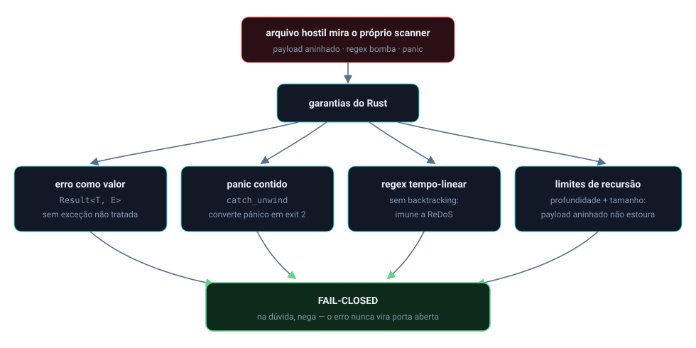
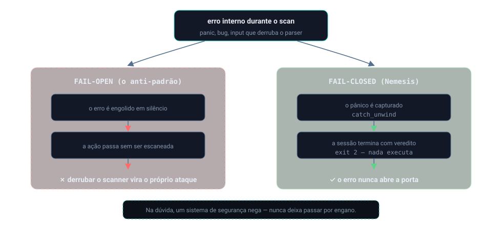

Início/Conceitos/4 · Rust como linguagem de defesa
conceito 4 · RustRust como linguagem de defesa
O Nemesis foi escrito em Rust de propósito. Uma ferramenta de segurança não pode ser, ela mesma, fonte de bug ou de negação de serviço. O fio condutor deste grupo é esse: cada escolha de linguagem serve para o defensor não virar o problema.
O projeto é um workspace de crates com a Cargo.lock commitada (build reprodutível). Erros não viram exceções soltas: o tratamento é com Result/Option e match. Se algo der pânico mesmo assim, um catch_unwind converte em exit 2 (fail-closed: na dúvida, bloqueia). O motor de regex é de tempo linear, sem backtracking, então não há ReDoS. E há limites duros (profundidade, tamanho) para o scanner ser determinístico e não travar.

exit 2, regex linear, limites duros: a ferramenta falha fechada, nunca aberta.Do zero: o que Rust oferece
Rust não tem exceções no estilo "lança e alguém pega lá em cima". O erro é um valor: uma função devolve Result<T, E> (deu certo com T ou falhou com E) ou Option<T> (tem valor ou não tem), e o compilador obriga a tratar os dois casos. O modelo de ownership garante segurança de memória sem coletor de lixo. Um workspace agrupa vários crates (pacotes) sob uma resolução de dependência única, e a Cargo.lock fixa as versões exatas. Pânico é o aborto controlado de uma thread; catch_unwind permite capturá-lo na fronteira.
Por que importa
Pensa no pior caso: o scanner recebe um arquivo construído para derrubá-lo. Se ele estourasse a pilha, entrasse em loop ou crashasse silenciosamente, o atacante teria achado um jeito de desligar a defesa só escrevendo um arquivo. Rust me deixa fechar essas portas: erro é tratado, pânico vira bloqueio, regex não explode, e há teto para recursão e tamanho. A ferramenta falha fechada, nunca aberta.

Como se correlaciona
Tudo aqui serve ao contrato do grupo 1: o fail-closed é o que garante que mesmo um erro interno termine em exit 2, mantendo o contrato de bloqueio honrado. Os limites de profundidade conversam com o decoder recursivo (payload aninhado não vira DoS) e com o pipeline (ordem determinística). E a Cargo.lock commitada é parte da postura de supply chain: sem bump silencioso de dependência.
Como o Nemesis aplica
O workspace declara os quatro crates e fixa a resolução; a Cargo.lock entra no git:
[workspace]
resolver = "2"
members = [ "ast-linters", "ebpf-kernel", "nemesis-defender", "nemesis-doctor" ]Erro como valor, não exceção: ler um arquivo é um match sobre Result, e a falha tem tratamento explícito.
let content = match std::fs::read(&path) {
Ok(c) => c,
Err(e) => {
eprintln!("[nemesis-defender] Cannot read {}: {}", path.display(), e);
std::process::exit(1);
}
};E o fail-closed da fronteira: o main do pretool roda dentro de um catch_unwind; qualquer pânico vira exit 2.
fn main() {
match std::panic::catch_unwind(|| { run_pretool() }) {
Ok(()) => {}
Err(panic) => {
eprintln!("[NEMESIS ERROR] Hook panic: {}", /* msg */);
std::process::exit(2); // fail-closed: pânico = bloqueio
}
}
}Contra DoS, há limites declarados como constantes, por exemplo a profundidade máxima do decoder e as faixas de tamanho que valem a pena escanear:
📄 .nemesis/nemesis-defender/src/scanner/decoder.rs:22-28 · limites contra DoSconst MAX_DECODE_DEPTH: u8 = 3; // payload aninhado não vira recursão infinita
const MIN_DECODED_LEN: usize = 8;
const MAX_CANDIDATE_LEN: usize = 4096; // não escaneia blobs gigantesDecisões e limites
No caminho que processa input não-confiável não há unwrap() nem expect(): entram unwrap_or_else, .ok()? ou let _ = para best-effort, porque um unwrap ali seria um pânico controlável pelo atacante. O fail-closed é aplicado por construção: exit 2 em pânico está certo no pretool, onde na dúvida o certo é bloquear; no daemon a regra é outra, ele nunca deleta na dúvida (ver grupo 9).
E ReDoS não alcança o scanner: o crate regex adotado é de tempo linear garantido, sem backtracking, então um padrão hostil não trava o scanner. Os padrões de exfil_chain e da denylist correm nesse motor.
Auto-checagem
Por que um pânico precisa virar exit 2 em vez de só crashar?
Porque crashar sem código de bloqueio poderia ser lido como "passou". Convertendo o pânico em exit 2, o contrato é mantido: na dúvida, a ação é negada. Isso é fail-closed.
Como Rust evita que o scanner seja derrubado por um arquivo malicioso?
Erro tratado como valor (sem exceção solta), segurança de memória por ownership, regex linear (sem ReDoS) e limites duros de profundidade/tamanho. A ferramenta falha fechada, não aberta.
Por que commitar a Cargo.lock?
Porque o Nemesis distribui binário: travar as versões exatas dá build reprodutível e impede que uma dependência mude por baixo (vetor de supply chain). O CI compila com --locked.
Para ir além
Citações verificadas contra o repositório. Voltar ao índice.